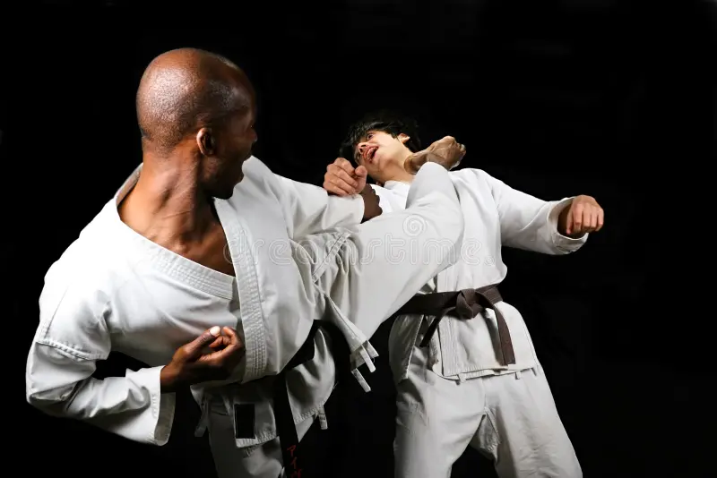
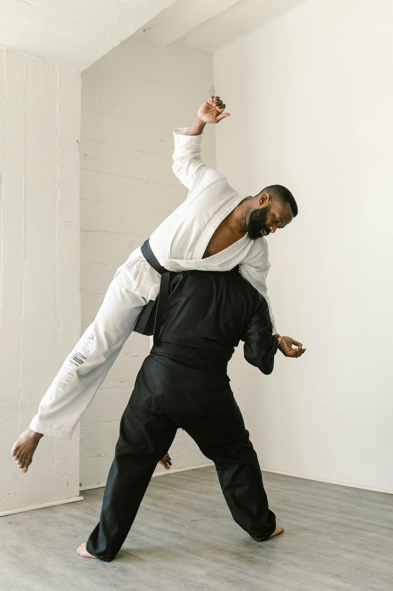
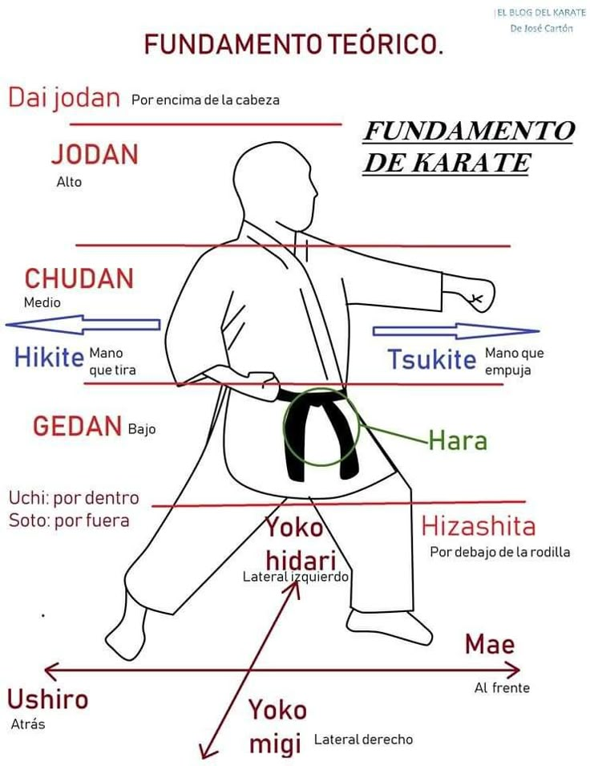
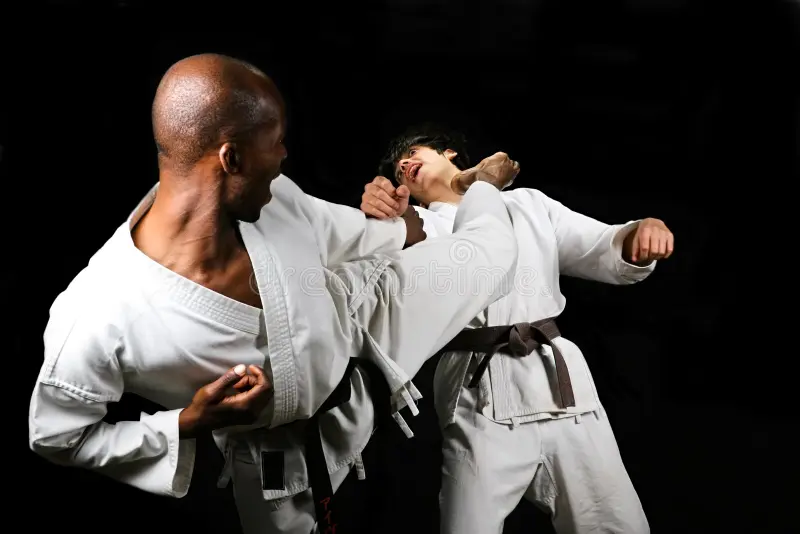
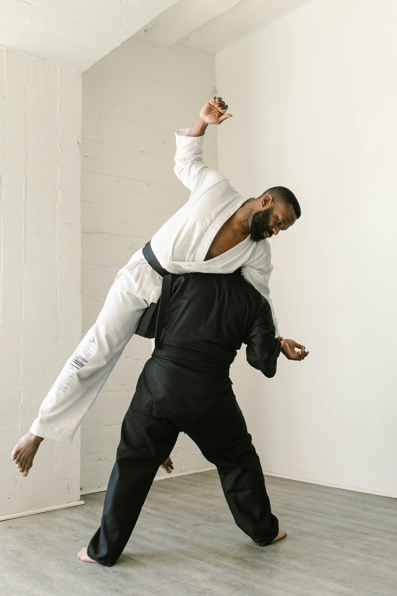
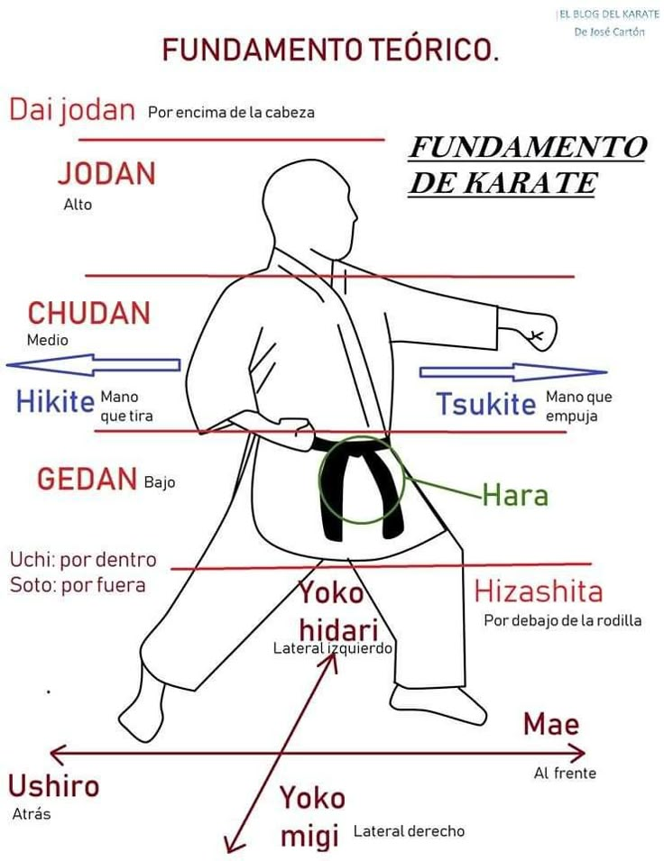

¿Qué es el Karate?
El Karate (空手), cuyo nombre significa "mano vacía" , es un arte marcial tradicional originario de Japón, con raíces en las antiguas técnicas de defensa de la región de Okinawa. Es una disciplina que combina técnicas de puñetazos, patadas, bloqueos, golpes con las manos abiertas , y movimientos de defensa y contraataque. Aunque inicialmente fue influenciado por artes marciales chinas como el Kung-Fu, el Karate evolucionó en el siglo XX incorporando conceptos filosóficos y técnicos del Judo, Kendo y Aikido , convirtiéndose en una práctica global tanto para defensa personal como para desarrollo físico y mental.
Características principales
Técnicas precisas y efectivas : Uso de puños (tsuki), patadas (geri), golpes con el borde de la mano (shuto) y la palma (teisho).
Beneficios del Karate
El Karate no solo desarrolla habilidades físicas como fuerza, flexibilidad, coordinación y resistencia , sino que también fortalece aspectos mentales y emocionales: Mejora la disciplina, concentración y autoconfianza . Enseña valores como el respeto, la humildad y la perseverancia . Favorece el equilibrio interior y la gestión del estrés. Es una herramienta efectiva de autodefensa .
Un camino de vida
Más que un deporte, el Karate es un estilo de vida basado en la constante superación personal. Su práctica fomenta la conexión entre cuerpo, mente y espíritu, guiando a sus practicantes hacia la excelencia en todos los aspectos.
Galería
 




